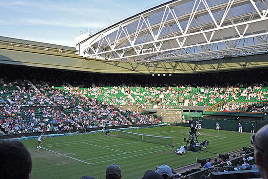

センターコート
（Centre Court）
ウィンブルドンのオールイングランド・ローンテニス・アンド・クローケー・クラブ内にあるテニス専用競技場である。座席数は15000席。一般には「中央広場」を意味するが、頭文字を大文字で表記した場合は特に本クラブのコートを指す名称となる。
ストロベリー&クリーム
ウィンブルドンの名物といえば、ストロベリー＆クリームです。テレビ中継でも、よく観客が食べている様子が映し出されますね。伝統的にロンドン南東にあるケント州の厳選イチゴが使用されます。テニスの試合の合間にストロベリー&クリームを食べるのは、ヘンリー8世の右腕、トマス・ウルジー卿が、敷地内のテニスコートで行われる試合を観に来た人々に、イチゴを振る舞ったことに由来しているのだそうです。

スコーン
小腹が空いたときにはスコーンがいいでしょう。毎年、ケーキの老舗が焼くスコーンは、ジャムとの相性もバッチリ。是非、紅茶と合わせて、クリーム・ティーとして味わってはいかがでしょうか。
フィッシュ&チップス
手軽に、でもしっかり食べたい方にはフィッシュ&チップスがおすすめです。イギリス英語でchips（チップス）とは、ポテトチップスではなくフライドポテトのこと。フレンチフライのような細いものではなく、太めのチップスです。ウィンブルドン選手権の会場のみならず、街中のレストランやパブでも注文することができますので、ロンドン滞在中に是非食べてみてください。ビールやエールとの相性も抜群です。
老舗パブ
The Dog and Fox Wimbledon
滞在中に是非立ち寄りたいのが19世紀からウィンブルドンの中心地にあるThe Dog and Fox。外観はパブですが、レストランエリアもありイギリスの伝統料理を出しています。ドラフトビール、クラフトビール、そしてロンドンスピリッツなどの種類も豊富です。また、宿泊もできます。